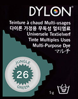

便利な小道具
ダイロン 家庭用染料
このシャツは生地もデザインもいいんだが色がちょっとなァ.....
という時には、家庭用の染料「ダイロン」で好みの色に染めることができます。ダイロンのマルチという製品を使うと、染める衣服を染料と一緒に熱湯に浸けることで染めることができます。私の行っている方法を簡単に説明します。
詳しくはダイロン マルチ 使い方 をご覧ください....
材料： ダイロンマルチ各色、色は豊富に揃っています。
手芸店等で入手可 （１パック500円で、
布地約250g＝Ｔシャツ２枚程度が染色可能）
※濃色(黒、紺、茶）は染料を２倍にして下さい。
用具： 昔ながらのブリキのバケツ
（飲食店などでブリキの一斗缶を入手してもよい）、
かくはん用の棒、食塩30ｇ
方法：
- 染める物の乾燥重量を量り、洗剤で洗って濡れたままにしておく。
- バケツに八分目の水を入れて沸かしておく。
- 衣料の重さに対応した数のダイロンのパックを開け、500ccの熱湯でよく溶かす。
- バケツに溶かした染料の液と食塩とを入れ、よくかくはんする。
- 衣料をバケツに入れて弱火にかけながら20分かくはんする。
- 火を止め、時々かくはんしながら20分漬け置きする。
- 水が透明になるまで良く濯ぎ、陰干しする。
濃い色に染めたいときは、ダイロンマルチを十分（倍量程度）使うのがコツのようです。綿の衣類は少し縮むのでご注意を。ダイロンのホームページを見ると、煮沸しなくても熱湯で染められるようですね。
以前ビデオで見た、ニュージーランドフィッシングガイド協会の会長さんという人は、帽子からズボンまで濃緑の衣服を身につけていました。透明度の高いＮＺの川で魚に見つかりにくくするためだそうです。

これは、ダイロンで染めた帽子とベストの写真です。染料は、ダイロンマルチの 26 JUNGLE GREEN ジャングルグリーン という色を用いています。僕の好きな色です。

だんだんと色が落ちて褪せてくるのは、2014/07/07 加筆修正